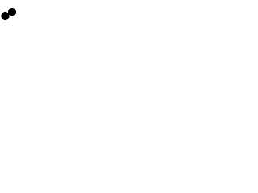
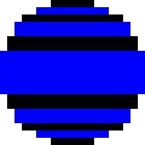
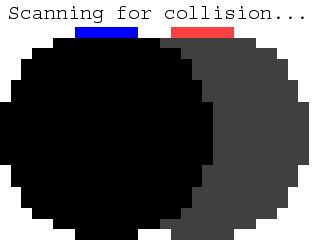
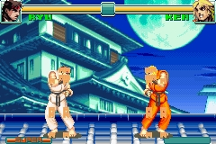
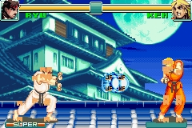
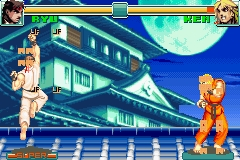
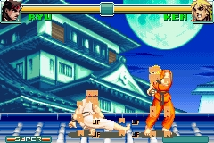

你已经学习了怎样进行矩形之间的碰撞检测。当然游戏中的物件不可能都是矩形，而且用矩形碰撞检测的方法在处理非矩形物体的碰撞时精度会很成问题。这节课我们将学习逐像素的碰撞检测。其实说到底屏幕上所有的东西都是由一个个小矩形构成的，即便是这样一个圆：
看不出来吗？让我们放大再看一下：
还看不出来？那现在如何？
由于计算机中所有的图形都是由像素构成的，而像素说白了都是一个个正方形，也就是矩形的一种。这样一来，无论你拿什么形状来碰撞检测，其实就是在检验两组矩形是否碰撞。
看不出来吗？让我们放大再看一下：
还看不出来？那现在如何？

由于计算机中所有的图形都是由像素构成的，而像素说白了都是一个个正方形，也就是矩形的一种。这样一来，无论你拿什么形状来碰撞检测，其实就是在检验两组矩形是否碰撞。
#include "SDL/SDL.h" #include "SDL/SDL_image.h" #include <string> #include <vector>
在这个程序中我们在加载以往我们已司空见惯的库的同时，还加载了vector向量库。向量其实就是数组，不过更好控制。
//定义圆点
class Dot
{
private:
//圆点的坐标
int x, y;
//用于碰撞检测的矩形数组
std::vector<SDL_Rect> box;
//圆点的速度
int xVel, yVel;
//根据圆点的坐标移动构成圆点的矩形
void shift_boxes();
public:
//初始化坐标
Dot( int X, int Y );
//接受键盘事件，调整圆点速度
void handle_input();
//移动圆点
void move( std::vector<SDL_Rect> &recs );
//屏幕上显示圆点
void show();
//获取碰撞盒
std::vector<SDL_Rect> & get_rects();
};
首先我们要将圆点类修改一下。
我们还是和以前一样设置坐标和速度变量，只是我们现在用向量来储存一连串的SDL_Rects，它们将起到碰撞盒的作用。
现在，我们要使用
除此之外，我们还是和以前一样声明了用于初始化圆点坐标的构造函数（圆点的坐标将由参数表明），还有事件处理函数，和以前一样的
我们还是和以前一样设置坐标和速度变量，只是我们现在用向量来储存一连串的SDL_Rects，它们将起到碰撞盒的作用。
现在，我们要使用
shift_boxes()来根据圆点坐标移动那些碰撞盒。待会儿我便会解释这是为何。除此之外，我们还是和以前一样声明了用于初始化圆点坐标的构造函数（圆点的坐标将由参数表明），还有事件处理函数，和以前一样的
move()、show()函数。我们添加了get_rects()来获取碰撞盒的信息。bool check_collision( std::vector<SDL_Rect> &A, std::vector<SDL_Rect> &B )
{
//矩形边界
int leftA, leftB;
int rightA, rightB;
int topA, topB;
int bottomA, bottomB;
//枚举向量A中的矩形
for( int Abox = 0; Abox < A.size(); Abox++ )
{
//计算矩形A的各边
leftA = A[ Abox ].x;
rightA = A[ Abox ].x + A[ Abox ].w;
topA = A[ Abox ].y;
bottomA = A[ Abox ].y + A[ Abox ].h;
//计算矩形B的各边
for( int Bbox = 0; Bbox < B.size(); Bbox++ )
{
//矩形B的各边
leftB = B[ Bbox ].x;
rightB = B[ Bbox ].x + B[ Bbox ].w;
topB = B[ Bbox ].y;
bottomB = B[ Bbox ].y + B[ Bbox ].h;
//如果矩形A的任意一条边在矩形B内
if( ( ( bottomA <= topB ) || ( topA >= bottomB ) || ( rightA <= leftB ) || ( leftA >= rightB ) ) == false )
{
//检测到碰撞
return true;
}
}
}
//如果没有任何一组碰撞盒检测到碰撞
return false;
}
这是我们新的碰撞检测函数。
利用两个储存
这个函数从向量A提取一个矩形，并同向量B中的矩形依次进行碰撞检测，然后不断地从向量A中提取一个矩形，重复之前的检测，直到检测到碰撞或所有矩形都经过检测为
这个函数检测碰撞的方法就像这样：
像上次一样，这个函数会在发现碰撞时返回true，反之则返回false。
利用两个储存
SDL_rect的向量，我们检验了两组矩形之间的碰撞。这个函数从向量A提取一个矩形，并同向量B中的矩形依次进行碰撞检测，然后不断地从向量A中提取一个矩形，重复之前的检测，直到检测到碰撞或所有矩形都经过检测为
这个函数检测碰撞的方法就像这样：

像上次一样，这个函数会在发现碰撞时返回true，反之则返回false。
Dot::Dot( int X, int Y )
{
//初始化坐标
x = X;
y = Y;
//初始化速度
xVel = 0;
yVel = 0;
//创建必要的SDL_Rects
box.resize( 11 );
//初始化碰撞盒的大小
box[ 0 ].w = 6;
box[ 0 ].h = 1;
box[ 1 ].w = 10;
box[ 1 ].h = 1;
box[ 2 ].w = 14;
box[ 2 ].h = 1;
box[ 3 ].w = 16;
box[ 3 ].h = 2;
box[ 4 ].w = 18;
box[ 4 ].h = 2;
box[ 5 ].w = 20;
box[ 5 ].h = 6;
box[ 6 ].w = 18;
box[ 6 ].h = 2;
box[ 7 ].w = 16;
box[ 7 ].h = 2;
box[ 8 ].w = 14;
box[ 8 ].h = 1;
box[ 9 ].w = 10;
box[ 9 ].h = 1;
box[ 10 ].w = 6;
box[ 10 ].h = 1;
//将碰撞盒移动到他们应在的位置
shift_boxes();
}
这是圆点的构造函数。
利用输入的参数来初始化圆点的坐标，并将圆点的速度归零。
然后，我们创建11个碰撞盒，就像这样：
最后，我们再根据圆点的坐标来调整碰撞盒的位置。
利用输入的参数来初始化圆点的坐标，并将圆点的速度归零。
然后，我们创建11个碰撞盒，就像这样：
最后，我们再根据圆点的坐标来调整碰撞盒的位置。
void Dot::shift_boxes()
{
//行坐标
int r = 0;
//枚举圆点的碰撞盒
for( int set = 0; set < box.size(); set++ )
{
//将碰撞盒居中
box[ set ].x = x + ( DOT_WIDTH - box[ set ].w ) / 2;
//调整碰撞盒的纵坐标使之与行坐标相符
box[ set ].y = y + r;
//在行坐标中加上碰撞盒的高度
r += box[ set ].h;
}
}
你可能会问，什么叫“根据圆点的坐标来调整碰撞盒的位置”？
假设一种情形，当你将圆点移动了100像素，但当它撞上另一个圆点时可能没有侦测到任何碰撞。
一种可能的原因是，当你移动圆点时，你没有把碰撞盒跟着它一起移动。而这正是我们这个函数所要做的。
不用纠结于这段复杂的代码了，其实这就是以下代码的改良形式：
box[ 0 ].x = x + 7;
box[ 0 ].y = y;
box[ 1 ].x = x + 5;
box[ 1 ].y = y + 1;
如此类推。
假设一种情形，当你将圆点移动了100像素，但当它撞上另一个圆点时可能没有侦测到任何碰撞。
一种可能的原因是，当你移动圆点时，你没有把碰撞盒跟着它一起移动。而这正是我们这个函数所要做的。
不用纠结于这段复杂的代码了，其实这就是以下代码的改良形式：
box[ 0 ].x = x + 7;
box[ 0 ].y = y;
box[ 1 ].x = x + 5;
box[ 1 ].y = y + 1;
如此类推。
void Dot::handle_input()
{
//当一个键被按下
if( event.type == SDL_KEYDOWN )
{
//调整速度
switch( event.key.keysym.sym )
{
case SDLK_UP: yVel -= 1; break;
case SDLK_DOWN: yVel += 1; break;
case SDLK_LEFT: xVel -= 1; break;
case SDLK_RIGHT: xVel += 1; break;
}
}
//当一个键被松开
else if( event.type == SDL_KEYUP )
{
//调整速度
switch( event.key.keysym.sym )
{
case SDLK_UP: yVel += 1; break;
case SDLK_DOWN: yVel -= 1; break;
case SDLK_LEFT: xVel += 1; break;
case SDLK_RIGHT: xVel -= 1; break;
}
}
}
这是原点的事件处理函数。如你所见，圆点的速度只有每帧一像素。所以当你发现这圆点跑的慢的时候不要担心，要相信程序。设置这种龟速的目的是为了让你更好的看清逐像素的碰撞检测。
void Dot::move( std::vector<SDL_Rect> ▭s )
{
//将圆点左右移动
x += xVel;
//拖动碰撞盒
shift_boxes();
//当方块移出屏幕或是发生了碰撞
if( ( x < 0 ) || ( x + DOT_WIDTH > SCREEN_WIDTH ) || ( check_collision( box, rects ) ) )
{
//移回去
x -= xVel;
shift_boxes();
}
//上下移动
y += yVel;
//拖动碰撞盒
shift_boxes();
//当方块移出屏幕或是发生了碰撞
if( ( y < 0 ) || ( y + DOT_HEIGHT > SCREEN_HEIGHT ) || ( check_collision( box, rects ) ) )
{
//移回去
y -= yVel;
shift_boxes();
}
}
这便是圆点的移动函数了，我们将它与show函数区分开来。
这段代码和先前的没啥大差别，我们移动圆点，并在移出屏幕或碰到其他碰撞盒时将圆点移回去，只有一个重要的地方和以前不同。
无论何时，只要当我们移动圆点，我们就会调用shift_box()函数来移动碰撞盒，使之紧靠圆点，要不然碰撞盒将发挥不了任何作用。
这段代码和先前的没啥大差别，我们移动圆点，并在移出屏幕或碰到其他碰撞盒时将圆点移回去，只有一个重要的地方和以前不同。
无论何时，只要当我们移动圆点，我们就会调用shift_box()函数来移动碰撞盒，使之紧靠圆点，要不然碰撞盒将发挥不了任何作用。
void Dot::show()
{
//显示圆点
apply_surface( x, y, dot, screen );
}
我们利用这个函数使圆点显示到屏幕上。
std::vector<SDL_Rect> ¨::get_rects()
{
//返回碰撞盒
return box;
}
这是用来获取碰撞盒的函数
//创建圆点
Dot myDot( 0, 0 ), otherDot( 20, 20 );
在我们的主函数中我们创建两个圆点对象。“myDot”是我们将要移动的圆点，“otherDot”是站定了不动，等着被我们撞的圆点。
//当用户还未退出
while( quit == false )
{
//启动帧计时器
fps.start();
//当有事件需要处理
while( SDL_PollEvent( &event ) )
{
//处理圆点的事件
myDot.handle_input();
//当用户关闭窗口
if( event.type == SDL_QUIT )
{
//退出程序
quit = true;
}
}
//移动圆点
myDot.move( otherDot.get_rects() );
//填充白色背景
SDL_FillRect( screen, ≻reen->clip_rect, SDL_MapRGB( screen->format, 0xFF, 0xFF, 0xFF ) );
//将圆点显示到屏幕上
otherDot.show();
myDot.show();
//更新屏幕
if( SDL_Flip( screen ) == -1 )
{
return 1;
}
//限制帧率
if( fps.get_ticks() < 1000 / FRAMES_PER_SECOND )
{
SDL_Delay( ( 1000 / FRAMES_PER_SECOND ) - fps.get_ticks() );
}
}
主循环就是这个样子。我们处理事件，移动圆点，填充白色背景，显示圆点，更新屏幕，最后限制帧率。现在你可以对任意形状检测碰撞了。
有一个要提醒大家的是，尽管你可以逐像素地检测，但99%的情况下你都用不着如此。
这里有个绝好的例子，超级街头霸王2。
如果你用的是GBA版本，当你放出akuma glitch时你将能看到碰撞盒的四个角：
你同样会发现，这里的碰撞检测也没有精确到像素级。
当你进行碰撞检测的时候，往往用不到像素级的精度。在许多情况下，这样做除了占用CPU外就一无是处。对于你来说，精度只要够用就行，至于具体使用哪种方法，那完全得由你来决定。
多碰撞盒的检测方式应该能解决大多数碰撞情况。如果速度很快但不会靠在一块儿的物体，那么在你熟悉线性代数的情况下可以考虑一下“扫描测试”。
这里有个绝好的例子，超级街头霸王2。
如果你用的是GBA版本，当你放出akuma glitch时你将能看到碰撞盒的四个角：




你同样会发现，这里的碰撞检测也没有精确到像素级。
当你进行碰撞检测的时候，往往用不到像素级的精度。在许多情况下，这样做除了占用CPU外就一无是处。对于你来说，精度只要够用就行，至于具体使用哪种方法，那完全得由你来决定。
多碰撞盒的检测方式应该能解决大多数碰撞情况。如果速度很快但不会靠在一块儿的物体，那么在你熟悉线性代数的情况下可以考虑一下“扫描测试”。